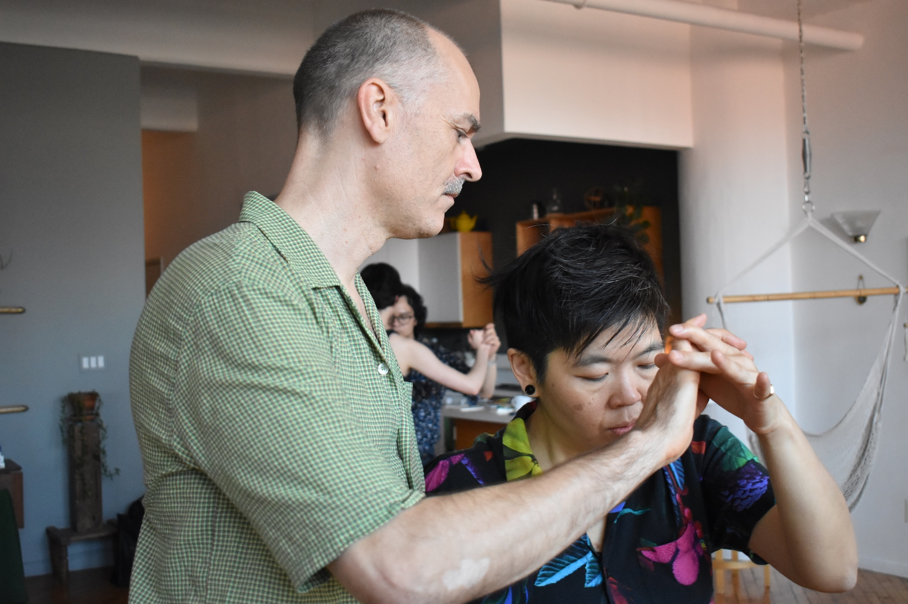
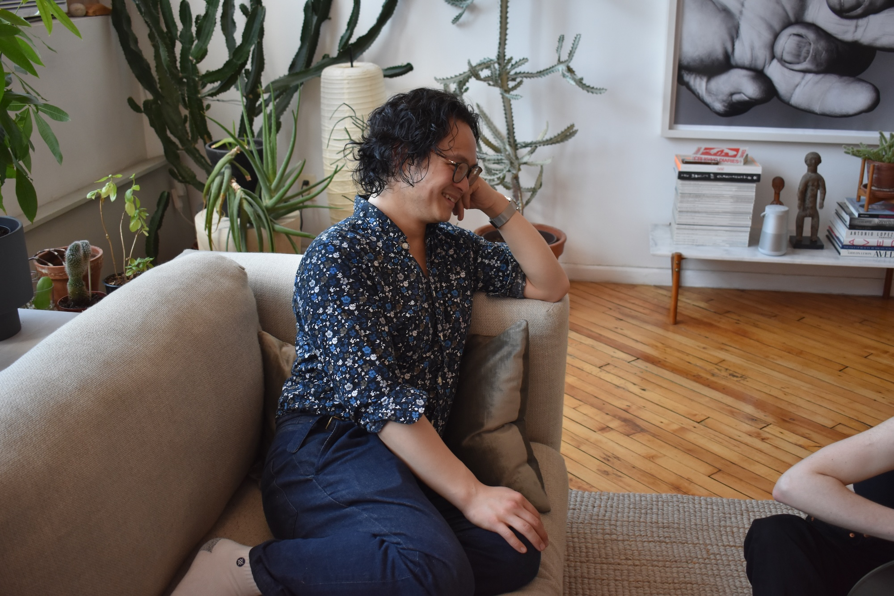
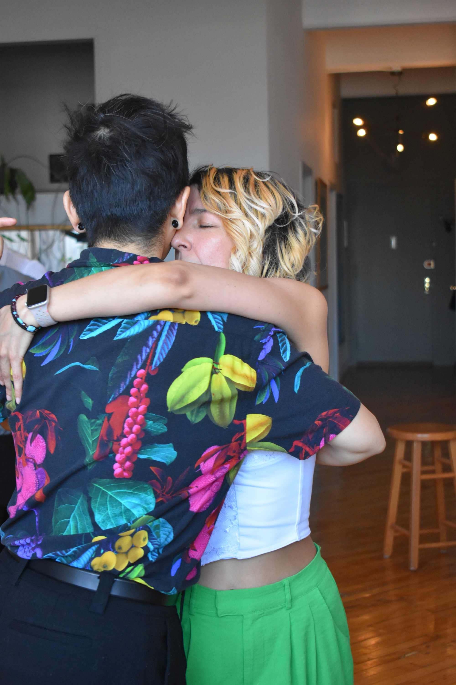
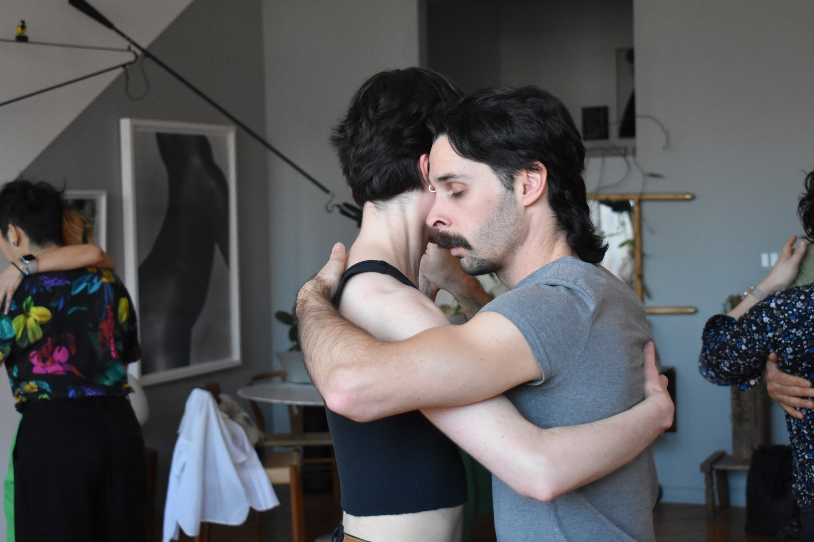
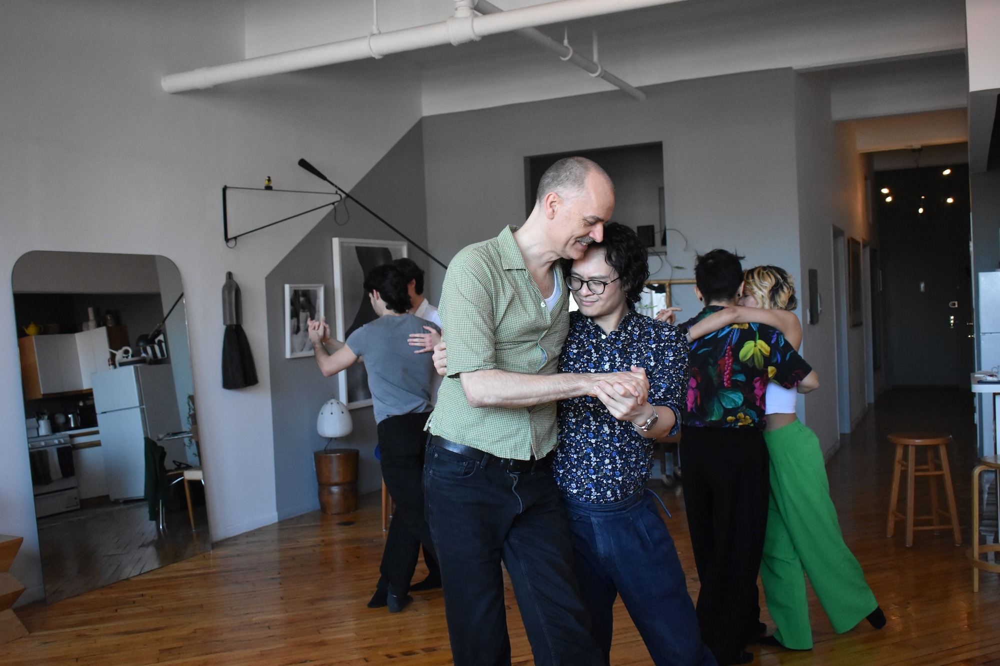
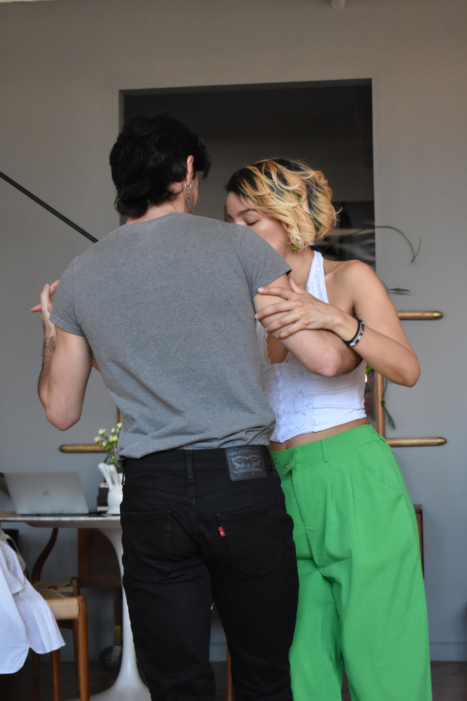

Sintiendo
¿Qué se siente al bailar tango?

Phi Lee
Siempre se siente como una meditación y un viaje hacia todo lo que odiás de vos misma. [ambes se ríen]. No, hablando en serio, puede iluminar mucho de lo que está presente para vos en ese momento: si podés estar presente con la otra persona o si te sentís desconectada de tu cuerpo y entonces es como si no supieras bailar, o si te sentís a la defensiva…Todo eso se vuelve mucho más evidente porque, cuando te movés con otra persona, aparece la pregunta: ¿por qué hoy me muevo de una manera y mañana de otra? Porque hay un montón de experiencias, emociones y sentimientos presentes que influyen en la forma en que somos.

Mati
Se sienten muchas cosas. Como decía antes, a veces es un poco difícil ponerlas en palabras, pero creo que se siente tu estado de ánimo, se siente qué tan cómoda o cómodo estás en el espacio en el que estás, se siente lo mismo, pero de la persona con la que estás bailando y se siente también una oportunidad, como decía antes, para conectar con otras personas a través de un lenguaje corporal no hablado.

Norma
Plenitud [ríe]. Plenitud total. Plenitud y…como lo que puede sentir una persona que vuela. O si quiero ser vulgar: es como un orgasmo que dura 3 minutos [ríe]. O sea, también depende con quien bailas, qué canción, y todo, pero cuando logras bailar con alguien con que conectas muy bien es así. Y no es sexual, para nada. O sea, pueda que sí, si te gusta la persona con la que bailas, entonces va a ser un poco más placentero. Hay un cierto—no sé cómo explicarlo—espiritualmente, mentalmente, corporalmente. Sí, siento algo que es orgásmico, volcánico, tal vez. Es increíble.

Leo
Para mí es un momento conmigo mismo y una desconexión, una manera de poder sacar cualquier cosa que esté dentro y dejarla ir en el baile. De transportarme y relajarme. También fluctúa porque cambia con cada abrazo. Depende con quién estés bailando. Hay amigos con los que no ves desde hace un montón y, de repente conectás y bailás y te trae esas memorias de esos tiempos de cuando estabas y qué pasaba en esos momentos cuando estabas bailando. Es como remontarse. Y cuando conocés gente nueva en el abrazo es como: OK, estoy manejando un auto nuevo y no sé cómo irá, ¿no? [Noah ríe] Y es como: OK, ¿menos o más? y estar más atento. O bailar con la persona con la que bailás siempre y es como llegué a casa, boom. No necesito pensar, me muevo, nos movemos y sale, todo fluye. Pero eso es la magia del tango. Por eso es siempre interesante, porque cambia en cada abrazo. Porque una cosa es lo que uno siente cuando baila. Y otra cosa es lo que te hacen sentir, porque uno a veces escucha una música y dice 'ay, este es el tango que quiero' y pum! Cambia porque la energía de la otra persona hace que todo cambie. Y ahí es cuando realmente la magia pasa. Para bien o para mal, pero cambia.

Mikael
NW: ¿Qué se siente al seguir?
Si es un abrazo cerrado, simplemente puedo derretirme en sus brazos y experimentar su musicalidad, vivir a esa persona y también mostrarme a mí en ese abrazo. Se siente como un abrazo sobre las nubes. Se siente un poco como el sexo por la conexión, por estar tan en el momento y sentirnos mutuamente. Es un poco como enamorarse.
NW: y, ¿Qué se siente al llevar?
Llevar es cuidar a la otra persona, hacer que el baile sea musical y conectar.

Arty
La sensación es realmente indescriptible porque es un lenguaje que no está hecho de palabras. Es como preguntar: ¿qué se siente hablar chino? Es un lenguaje en el que te comunicás con el cuerpo. Cuando llevás, estás sugiriendo, proponiendo; estás diciendo: quiero moverme hacia acá. ¿Venís conmigo? ¿Me seguís hacia donde quiero ir? Y cuando seguís, es como decir: vos me vas a proponer algo y yo también voy a responder con mi propia propuesta. Voy a tomar eso que me ofrecés y lo voy a interpretar a mi manera. Es algo tan hermoso y tan mágico.